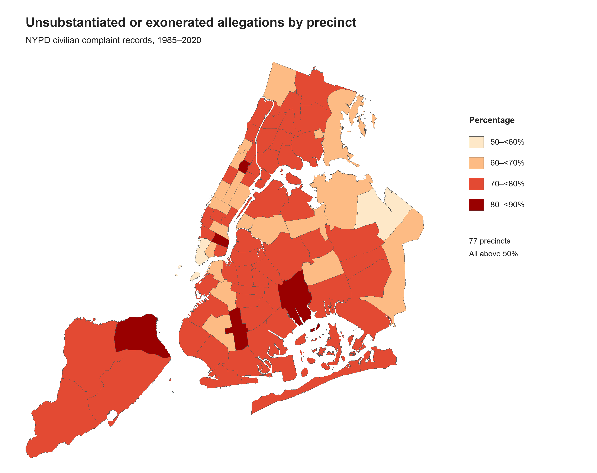

Proposition: Most CCRB allegations against NYPD officers become Unsubstantiated or Exonerated.
FOR the Proposition

Design Decisions and Rationale:
- −1.5. I combined unsubstantiated and exonerated allegations into one percentage to support the FOR argument. This makes the majority clear, but it hides the difference between insufficient evidence and conduct found lawful and proper. I considered showing the outcomes separately, but combining them made my message stronger.
- +1.5. I used percentages so I could compare precincts with different numbers of allegations. Raw counts would draw attention mainly to precincts with more records. Percentages make the comparison easier, but they do not show that some precincts have much smaller samples.
- −1. I used orange and red to make higher percentages look concerning. The colors help readers notice the pattern, but they also suggest these outcomes are negative without explaining why they happened. I first tried blue, but it felt too calm for the argument I wanted to make.
- −1. I started the color scale at 50% because every precinct was above that level. This makes differences stand out more than a scale from 0% to 100%, but it can make those differences seem larger. I used four color groups to keep the legend simple, although precincts near a cutoff can look more different than they really are.
- +1. I added this note to make the main finding easy to understand without checking every precinct. It supports my argument that the majority pattern appears across the city. I considered highlighting only the highest percentages, but the statement about all 77 precincts gives a broader picture.
AGAINST the Proposition
Design Decisions and Rationale:
- −2. I selected these three allegation categories because their substantiation rates are unusually high compared with other categories in the dataset. Showing them together makes high substantiation appear typical, even though 75% of allegations in the full dataset were unsubstantiated or exonerated. Displaying all categories would provide more context but weaken the intended argument. Although the percentages shown are accurate, selecting an unrepresentative subset encourages readers to draw a broader conclusion than the data supports.
- −1.5. The title, “Are most allegations substantiated?”, asks a broad question that readers may answer using only the three categories shown. The subtitle suggests an affirmative answer and emphasizes that substantiation has become more common over time. It mentions the three categories, but readers may still take their results as representative of all allegations. These categories support the intended impression without disproving the original proposition, since substantiation can be common and increasing within them while remaining a minority overall.
- −0.5. I initially used a 0-100% scale, but narrowed it to 30-100% in order for the differences and increases more visually pronounced. I think this is a defensible choice for a line chart because percentages are encoded by position and the axis clearly labels the displayed range. However, using more of the plot’s height for the same changes makes the increases appear larger and strengthens the impression of rising substantiation.
- +0.5. I filtered to 2000–2019 and grouped allegations by category and five-year interval, then calculated the proportion of allegations in each group that were substantiated. Annual rates showed a less clear trend because some categories had very few allegations in individual years. Grouping reduced that instability but also hides annual peaks and troughs, making the upward trend appear smoother. The date range provides four complete intervals and excludes only two earlier allegations, from 1997 and 1999.
- +1.5. I encoded time periods on an aligned x-axis and percentages on an aligned y-axis so readers can compare categories directly. I encoded the category with color, marker shape, and line stroke style so that categories are easily distinguishable from one another even without color. I also labeled the 50% reference line to emphasize that all but one plotted point represents a substantiated majority. For this visualization, I chose to make a line plot. My checkpoint visualization used stacked bars to compare outcomes within each category, but those bars did not show whether substantiation was becoming more common. Displaying percentages against the five-year percentages makes that change easy to follow.
Final Reflection
Throughout the design process, the most straightforward part was creating the visualization in support of the proposition that most allegations were unsubstantiated or exonerated, since that pattern already existed and appeared strong across the full dataset. For that visualization, we combined unsubstantiated and exonerated allegations into one percentage to make the pattern clearer across precincts. We also used percentages instead of raw counts so precincts with different numbers of allegations could be compared more easily, though this does not show that some precincts have smaller samples. The orange and red color scale was used to make higher percentages feel more concerning, and starting the scale at 50% made differences between precincts stand out more. The annotation that all 77 precincts were above 50% also gave a broader picture of the pattern and made the argument stronger.
The opposing visualization was a bit more difficult to put together because the overall pattern of the dataset does not support the stance that most allegations were substantiated. To make that side persuasive, we selected three allegation categories with unusually high substantiation rates, even though 75% of allegations in the full dataset were unsubstantiated or exonerated. We grouped those allegations into five-year periods and showed how their substantiation rates changed over time, which reduced variability caused by small yearly counts. The title “Are most allegations substantiated?” and the subtitle encourage viewers to apply the selected categories more broadly, while narrowing the y-axis from 0-100% to 30-100% makes the increases appear more visually pronounced. At the same time, a few choices were more earnest, such as placing the time periods and percentages on aligned axes, encoding categories with color, marker shape, and line style, and labeling the 50% reference line. What surprised me was how persuasive the visualization appeared even though selective grouping and framing were used. The trend still looks strong despite only representing a small part of the full dataset.
I now define ethical analysis and visualization as not only using information selectively to best communicate an argument, but also being aware of how intentional design choices shape the viewer’s interpretation. Persuasive choices can be acceptable when they emphasize a real pattern while still giving the viewer enough context to understand what is being shown. I think the boundary becomes misleading when those choices become too extreme or unrepresentative, or when too much context is hidden in a way that makes the viewer interpret the entire dataset in a different direction.